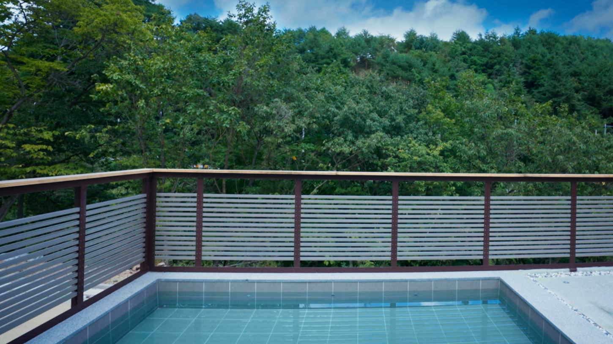

THE FOUR CHAPTERS
Four cities.
One story.
네 도시마다 도시 소개, 우리가 머문 숙소, Memory Index가 한 장의 이야기처럼 이어집니다. 각 챕터에서 사진과 기록을 자유롭게 편집할 수 있어요.
CITY NOTEBOOKS / 도시 소개 → 머문 공간 → 기억의 목록
BETWEEN CITIES
Between cities.
OUR FOUR CITY JOURNEYSCHEMATIC · NOT TO SCALE
A SEARCHABLE COLLECTION / 네 도시의 기록
여행의 기록을 찾아보기
24 PLACES · 4 CITY NOTEBOOKS
MILANO / ITALIAOUR CITY NOTEBOOK
MILANO
OUR PHOTOGRAPH
MILANO · ITALIA
밀라노
여행이 시작되는 도시
🤢 : 우왕 유럽이다
🤓 : 늦은밤, 미니마켓 사장님 생각보다 친절하다.
1일 · 초기 계획 · 여행 기록 2개
THE PLACE WE STAYED
머물렀던 공간.
WHERE WE STAYED / MILANO
춥고 비쌈, 로비에 프리물 있음
ibis hotel
MILANO / MEMORY INDEX
Memory index.
MILANO / MEMORY
건축·풍경
건축, 동네, 길 위에서 마주한 장면들
밀라노 / 기타
말라노 열차역
밀라노 도착! 아름다운 열차역
밀라노 / 건축
밀라노 · 여행의 첫 구간
와 크다. 화려하다
FIRENZE / ITALIAOUR CITY NOTEBOOK
FIRENZE
REFERENCE IMAGE · REPLACE WITH YOUR PHOTO
FIRENZE · ITALIA
피렌체
낡은 돌과 오래된 그림 앞에서
건축과 미술, 피렌체의 오래된 거리뿐 아니라 토스카나의 작은 도시와 현지 문화까지 궁금해했던 시간.
베키오 다리, 토스카나, 동네의 서점과 도서관. 실제로 둘이 가장 오래 머문 순간은 어디였나요?
4일 · 초기 계획 · 여행 기록 5개
THE PLACE WE STAYED
머물렀던 공간.
PHOTO 01사진을 추가해 주세요
PHOTO 02사진을 추가해 주세요
PHOTO 03사진을 추가해 주세요
PHOTO 04사진을 추가해 주세요
WHERE WE STAYED / FIRENZE
숙소 기록을 기다리는 중
피렌체 숙소 이름과 주소는 현재 대화에 확인된 기록이 없어 비워 두었습니다.
FIRENZE / MEMORY INDEX
Memory index.
FIRENZE / MEMORY
건축·풍경
건축, 동네, 길 위에서 마주한 장면들
피렌체 / 건축
베키오 다리 · Ponte Vecchio
여행 이후에도 베키오 다리가 무엇인지 다시 물었던 장소. 실제 방문 장면과 감상은 추후 기록할 수 있어요.
피렌체 / 동네
토스카나 · 피지본시
피지본시가 어떤 동네인지 살펴본 기록. 실제 방문 여부와 이동 경로는 확인이 필요해요.
FIRENZE / MEMORY
예술·문화
전시와 공연, 그리고 현지의 문화
피렌체 / 문화
마루첼리아나 도서관
관광객도 들어갈 수 있는지, 방문할 만한 도서관인지 알아보았어요.
피렌체 / 문화
피렌체의 전시와 건축
걸어서 만난 건축과 전시, 영화·음악 공간에 관심이 많았던 기록.
FIRENZE / MEMORY
식탁·취향
식당과 쇼핑, 취향이 남은 곳들
피렌체 / 미식
피렌체의 커피와 원두
이탈리아 커피, 현지에서 고를 수 있는 원두와 인스턴트 커피를 알아보았어요. 구매 여부는 아직 비워 둡니다.
MÁLAGA / ESPAÑAOUR CITY NOTEBOOK
MÁLAGA
REFERENCE IMAGE · REPLACE WITH YOUR PHOTO
MÁLAGA · ESPAÑA
말라가
바다 곁에서 만난 오래된 역사
로마 극장과 알카사바, 시장과 현지의 음식. 관광 명소뿐 아니라 사람들이 일상을 보내는 곳에 대한 질문이 많았던 도시.
시장에서 본 풍경, 야외 테라스, 저녁의 골목. 어느 장면을 가장 오래 기억하고 싶나요?
4일 · 초기 계획 · 여행 기록 8개
THE PLACE WE STAYED
머물렀던 공간.
PHOTO 01사진을 추가해 주세요
PHOTO 02사진을 추가해 주세요
PHOTO 03사진을 추가해 주세요
PHOTO 04사진을 추가해 주세요
WHERE WE STAYED / MÁLAGA
말라가의 스튜디오
Calle Hinestrosa 17, Málaga
2026년 10월 · 상세 숙박일은 확인 후 입력
3층 스튜디오. 건물은 층마다 스튜디오가 하나씩 있는 구조로 안내받았어요. 체크아웃 시 열쇠는 안내받은 우편함에 반납하는 방식이었습니다. 출입 비밀번호와 와이파이 비밀번호는 기록하지 않았어요.
CHECK-OUT · 12:00
MÁLAGA / MEMORY INDEX
Memory index.
MÁLAGA / MEMORY
건축·풍경
건축, 동네, 길 위에서 마주한 장면들
말라가 / 건축
알카사바 · Alcazaba
현장 사진과 성벽·요새에 관한 질문을 남겼어요. 말라가의 이슬람 시대 건축을 가까이 살펴본 기록.
말라가 / 건축
로마 극장 · Teatro Romano
로마 극장 앞에서 건축과 역사에 관해 물어본 기록이 있어요.
말라가 / 건축
말라가 대성당
대성당의 건축과 르네상스·바로크 차이에 관심을 두었어요. 입장 여부는 확인되지 않았어요.
말라가 / 동네
아타라사나스 중앙시장
마지막 날에 이미 다녀왔다고 이야기한 시장. 현지 음식과 해산물 튀김에도 관심이 있었어요.
말라가 / 건축
히브랄파로 성
말라가의 고지대 요새와 전망을 두고 질문했던 장소. 실제 방문 여부는 편집해 주세요.
말라가 / 동네
현지 동네와 바다 쪽 자전거
관광지를 벗어난 동네, 젊은이들의 바와 음악 공간, 바다 일몰 자전거 코스를 고민했어요.
MÁLAGA / MEMORY
예술·문화
전시와 공연, 그리고 현지의 문화
말라가 / 문화
카르멘 티센 미술관
로마 극장에서 티센 미술관으로 이동하는 동선과 근처 간식을 알아보았어요.
MÁLAGA / MEMORY
식탁·취향
식당과 쇼핑, 취향이 남은 곳들
말라가 / 미식
타파스 · 해산물 튀김 · 오늘의 메뉴
현지인 중심의 식당과 야외 테라스, 해산물 요리와 메뉴 델 디아를 집중적으로 찾아봤어요. 실제 맛집 이름과 평점은 추가할 수 있어요.
BARCELONA / ESPAÑAOUR CITY NOTEBOOK
BARCELONA
REFERENCE IMAGE · REPLACE WITH YOUR PHOTO
BARCELONA · ESPAÑA
바르셀로나
마지막 도시가 남긴 장면들
사그라다 파밀리아와 고딕 지구, 몬세라트, 미술관 주변의 풍경. 음식과 영화, 기념품까지 일상의 결을 찾던 마지막 도시.
성당을 보던 순간, 몬세라트의 산, 축제의 밤. 두 사람의 마지막 장면을 여기 남겨 보세요.
4일 · 초기 계획 · 여행 기록 9개
THE PLACE WE STAYED
머물렀던 공간.
WHERE WE STAYED / BARCELONA
바르셀로나 숙소 · 이름 미확인
여행 중 공유한 숙소 지도 링크가 있어요. 숙소 이름, 정확한 주소와 사진은 직접 보완할 수 있습니다.
BARCELONA / MEMORY INDEX
Memory index.
BARCELONA / MEMORY
건축·풍경
건축, 동네, 길 위에서 마주한 장면들
바르셀로나 / 건축
사그라다 파밀리아
성당 주변에 직접 있었고, 건축 설명과 전망을 볼 수 있는 카페, 기념품 동선도 살펴봤어요. 내부 입장 여부는 확정하지 않았어요.
바르셀로나 / 동네
고딕 지구 · Barri Gòtic
고딕 지구의 역사와 이 지역을 배경으로 한 영화에 관심을 두었던 기록.
BARCELONA / MEMORY
예술·문화
전시와 공연, 그리고 현지의 문화
바르셀로나 / 문화
몬세라트 수도원
수도원 이동과 성가대 예약, 케이블카 대기와 산악열차 귀환을 고민했던 기록. 탑승·관람의 세부 장면은 추후 수정 가능해요.
바르셀로나 / 문화
카탈루냐 국립미술관 주변
몬주익의 미술관 건물과 앞의 분수·전망에 관해 물어봤어요. 미술관 내부 관람 여부는 확인되지 않았어요.
바르셀로나 / 문화
음악 페스티벌의 플라스틱 컵
음악 페스티벌에서 보증금이 붙은 컵을 받고 반납 방식을 물어본 장면. 작지만 여행다운 생활 문화의 기록.
바르셀로나 / 문화
도시의 영화관과 음악 문화
유럽의 영화관 문화, 바르셀로나에서 즐길 영화와 예술 공간을 알아봤어요.
BARCELONA / MEMORY
식탁·취향
식당과 쇼핑, 취향이 남은 곳들
바르셀로나 / 쇼핑
라 치나타 · La Chinata
현장에서 올리브오일, 발사믹, 크림 등 기념품과 가격을 비교했던 기록.
바르셀로나 / 미식
피데우아·판 콘 토마테·이베리코
스페인 현지 음식을 골라 보고, 마트와 식당 메뉴를 비교했어요. 무엇을 실제로 먹었는지는 직접 체크해 주세요.
바르셀로나 / 쇼핑
마트와 자라에서의 기념품 탐색
올리브오일과 커피, 과자, 스페인 식재료와 향수까지 여행의 기억을 떠올리며 골랐어요.
TWO VOICES
Two voices.
같은 여행, 서로 다른 기억.
TWO VOICES
우리가 고른 것들
한 끼, 한 공간, 작은 소비에 담긴 취향.
최고의 식당
식당 이름과 분위기, 함께 먹던 그 시간
원희
이 장면에 대한 사진과 이야기를 남겨 주세요.
은정
이 장면에 대한 사진과 이야기를 남겨 주세요.
기억에 남은 한 접시
식당과는 별개로 가장 그리운 음식이나 메뉴
원희
이 장면에 대한 사진과 이야기를 남겨 주세요.
은정
이 장면에 대한 사진과 이야기를 남겨 주세요.
맛없는 음식
입맛에 맞지 않았던 한 접시
원희
이 장면에 대한 사진과 이야기를 남겨 주세요.
은정
이 장면에 대한 사진과 이야기를 남겨 주세요.
최고의 숙소
네 도시 중 가장 편안했거나 특별했던 공간
원희
이 장면에 대한 사진과 이야기를 남겨 주세요.
은정
이 장면에 대한 사진과 이야기를 남겨 주세요.
좋은 소비
사고 나서 오래 만족했던 물건이나 경험
원희
이 장면에 대한 사진과 이야기를 남겨 주세요.
은정
이 장면에 대한 사진과 이야기를 남겨 주세요.
TWO VOICES
새로 알게 된 우리
다음 여행으로 이어질 우리의 취향과 마음.
예술과 건축의 한 장면
미술관, 성당, 거리의 건물 중 마음에 남은 것
원희
이 장면에 대한 사진과 이야기를 남겨 주세요.
은정
이 장면에 대한 사진과 이야기를 남겨 주세요.
별로였던 장소
기대와 달랐던 공간 혹은 동네
원희
이 장면에 대한 사진과 이야기를 남겨 주세요.
은정
이 장면에 대한 사진과 이야기를 남겨 주세요.
다시 걷고 싶은 동네
목적지 없이 걷고 싶었던 거리와 동네
원희
이 장면에 대한 사진과 이야기를 남겨 주세요.
은정
이 장면에 대한 사진과 이야기를 남겨 주세요.
취향의 발견
이번 여행에서 새롭게 알게 된 내 취향
원희
이 장면에 대한 사진과 이야기를 남겨 주세요.
은정
이 장면에 대한 사진과 이야기를 남겨 주세요.
다시 돌아가고 싶은 곳
언젠가 둘이서 다시 가고 싶은 도시 또는 장소
원희
이 장면에 대한 사진과 이야기를 남겨 주세요.
은정
이 장면에 대한 사진과 이야기를 남겨 주세요.
TWO VOICES
남겨진 장면
기억은 같은 날에도 다른 모습으로 남는다.
예상 밖의 즐거움
계획에 없었지만 오래도록 이야기하게 될 일
원희
이 장면에 대한 사진과 이야기를 남겨 주세요.
은정
이 장면에 대한 사진과 이야기를 남겨 주세요.
아쉬웠던 점
더 좋았을 수도 있었던 여행의 한 부분
원희
이 장면에 대한 사진과 이야기를 남겨 주세요.
은정
이 장면에 대한 사진과 이야기를 남겨 주세요.
가장 오래 남은 풍경
그때의 빛과 날씨, 소리까지 기억나는 풍경
원희
이 장면에 대한 사진과 이야기를 남겨 주세요.
은정
이 장면에 대한 사진과 이야기를 남겨 주세요.
최악의 순간
곤란하거나 속상했지만 지금은 이야기할 수 있는 기억
원희
이 장면에 대한 사진과 이야기를 남겨 주세요.
은정
이 장면에 대한 사진과 이야기를 남겨 주세요.
최고의 순간
여행을 다시 시작할 수 있다면 가장 먼저 떠올릴 장면은?
원희

✧ 정답은 없어요. 같은 도시에서도 서로 다른 장면을 기억할 수 있으니까요. 각자의 답은 직접 입력해 주세요.
OUR AFTERWORDS
After the journey.
원희 / TRAVEL NOTES
원희의 여행 감상
우리의 여행에서 떠오르는 기억을 적어보세요.
은정 / TRAVEL NOTES
은정의 여행 감상
우리의 여행에서 떠오르는 기억을 적어보세요.
THE JOURNEY IN NUMBERS
Travel expenses.
두 사람이 함께한 여행의 전체 지출을 원화로 남기는 공간.
TOTAL TRAVEL COST · KRW
여행 총금액
₩ 0
EPILOGUE / UNTIL WE MEET AGAIN
We came home.
The story stayed.
가장 좋은 여행의 장면은, 같은 풍경을 바라본 두 사람이 서로 다른 것을 기억한다는 사실일지도 모른다.
OCTOBER 19 — NOVEMBER 01, 2026